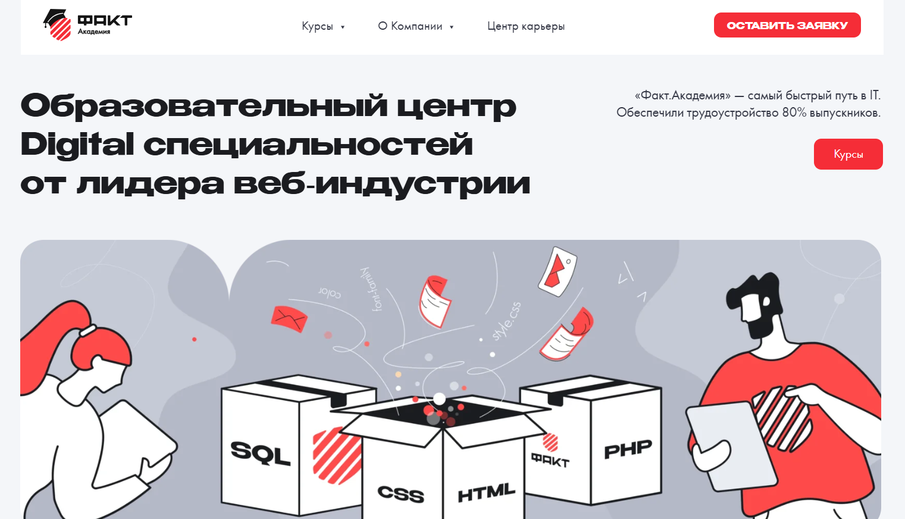

Курс «Bitrix-разработчик с нуля» — Нетология

Ссылка на курс: https://netology.ru/programs/bitrix
Цена: 110 000 рублей без скидок
Длительность обучения: 10 месяцев
После окончания курса: Диплом о профессиональной переподготовке
Помощь в трудоустройстве: Мы поможем вам найти работу
Что вы получите
- Доступ к карьерным программам Центра развития карьеры
- Помощь в написании качественного резюме
- Навыки уверенного самопрезентации
- Информация по поиску работы
- Знакомство с платформами для поиска вакансий и выход на проектную биржу
- Подготовка к интервью
- Умение уверенно говорить о своих достоинствах и адекватно отвечать на вопросы
- Создание портфолио
- Оформление портфолио, акцентируя ваши навыки
- Навыки самостоятельной работы
- Доступ к информации о первичных клиентах и возможность установить с ними связь
Для кого этот курс подходит
Не имеет значения, какой у вас опыт или уровень образования, вы сможете изучить новую специальность с нуля и постепенно научитесь разрабатывать веб-сайты под руководством профессиональных наставников.
Чему вы научитесь
Во время обучения вы создадите:
• Кроссбраузерную верстку блога с применением HTML и CSS
• Игру «Крестики-нолики» на JavaScript
• Информационный портал с использованием платформы 1С-Битрикс
• Интернет-магазин спортивного инвентаря на базе 1С-Битрикс
Структура курса
Занятия проходят дважды в неделю с 19:00 до 21:00. В ходе курса вы выполните больше 100 практических заданий, создадите три проекта и успешно защитите дипломную работу.
Часть 1. Основы веб-разработки на JavaScript и PHP
Создание сайтов с помощью HTML и CSS
Вы научитесь разрабатывать веб-страницы при помощи HTML и CSS и сможете вносить изменения в существующие дизайны. По окончании модуля вы будете способны самостоятельно проектировать одностраничный сайт.
12 часов теории
24 часа практики
Теги для создания контента страниц
Основные элементы страниц
Формы и их компоненты
CSS-селекторы
Контрастность элементов
Блочная модель
Позиционирование элементов
Форматирование текста
Декоративное оформление элементов
Статусы интерактивных элементов
Кроссбраузерная верстка блога с HTML и CSS
Курсовая работа
Вы создадите проект личного блога с кроссбраузерной версткой на HTML и CSS.
24 часа практики
Основы программирования на JavaScript
Вы получите базовое понимание принципов программирования, напишите свои первые приложения и разработаете несколько простых проектов.
Практические занятия будут сосредоточены на JavaScript, что даст вам понимание работы клиентских приложений.
Вы изучите различные языки программирования и сможете выбрать тот, который подходит вам в зависимости от ваших целей и амбиций.
В итоговом проекте вы создадите онлайн-версию игры, подобной «Монополии».
12 часов теории
24 часа практики
Алгоритмы
Переменные, строки, числа
Логические и математические операции
Условные конструкции
Выбор алгоритмов
Обработка ошибок в коде
Массивы
Циклы
Функции и подпрограммы
Объекты
Синхронные и асинхронные алгоритмы
Игра «Крестики-нолики» на JavaScript
Курсовая работа
На данном этапе вам нужно будет создать игру «Крестики-нолики». Фронтенд-разработчик занимается визуальными элементами, а ваша задача – обеспечить программирование логики игры, позволяющей игрокам по очереди расставлять свои символы.
24 часа практики
Система контроля версий Git
Вы изучите, как использовать Git и GitHub, сможете загружать свои домашние задания и создать собственное портфолио – работодатели часто запрашивают примеры кода на GitHub.
4 часа теории
9 часов практики
Цели систем контроля версий
Основные действия: коммиты, изменения и восстановление, анализ и просмотр истории
Работа с GitHub
Создание веток, слияние и разрешение конфликтов
Совместная работа
Основы PHP
Вы начнете изучение языка PHP. В этом курсе вы познакомитесь с основными конструкциями и будете работать с функциями и объектами.
13 часов теории
32 часа практики
Введение в PHP и PhpStorm
Консольные приложения на PHP
Основные операторы и функции
Функции в PHP
Структуры данных в PHP
Обработка запросов и сессии
Работа с файлами и HTML-формами
Размещение приложений на хостинге
Ассортимент веб-приложений
Вы изучите, как происходит взаимодействие фронтенда и бэкенда. Освоите популярные форматы и методы передачи данных, а также API современных HTTP-серверов.
7 часов теории
21 час практики
HTTP и актуальные аспекты веба. Форматы и методы передачи данных
Библиотека JQuery
Библиотека Bitrix JS
REST API в Bitrix Framework
Форматы обмена данными JSON и XML
Работа с MySQL
Введение в профессию Bitrix-разработчика
Финальная работа
Промежуточный проект – интернет-магазин спортивного инвентаря
Вы создадите интернет-магазин спортивного оборудования на платформе 1С-Битрикс.
Вам предстоит разработать как клиентскую, так и административную часть проекта.
На финальный проект отводится месяц.
Административная часть включает:
• Управление ассортиментом
• Обработка заказов
• Управление новостями
• Создание текстовых страниц
• Настройка платежных систем
• Организация доставки
Клиентская часть включает:
• Текстовые страницы
• Навигационное меню
• Каталог товаров
• Раздел новостей
• Корзина
• Оформление заказов
Ключевые навыки
- Создание верстки сайтов с помощью HTML и CSS
- Работа с фронтенд-частью приложения на JavaScript
- Работа с бэкенд-частью приложения на PHP
- Управление версиями кода через Git и GitHub
- Разработка сайтов на платформе Bitrix Framework
- Администрирование сайтов на 1С-Битрикс
- Работа с API сторонних сервисов
- Опыт работы с новым ядром платформы Bitrix D7
Профессия 1С-разработчик в Skillbox

Сайт: https://skillbox.ru/course/profession-1c/
Стоимость: 3956 рублей в месяц с рассрочкой на 22 месяца
Длительность курса: 6 месяцев
Удостоверение по окончании: сертификат от компании «1С»
Помощь в трудоустройстве: да
Станьте экспертом в системе «1С:Предприятие», работая под руководством наставника, и начните зарабатывать, даже если у вас нет опыта программирования. Мы поддержим вас в поиске подходящей работы по завершении курса.
Кому будет полезен данный курс
Новичкам
Вы получите практические навыки в программировании и работе с конфигурациями в «1С:Предприятие 8», подготовитесь к экзамену «1С:Профессионал» и сможете претендовать на позицию программиста 1С.
Пользователям «1С»
Вы сможете адаптировать конфигурации под потребности клиентов. Научитесь составлять технические задания, создавать отчёты, обрабатывать данные и разрабатывать функции.
Опытным программистам
Вы получите знания об оперативном учете, научитесь работать с учетными регистрами и расчетами, сможете корректировать типовые настройки 1С.
Сертификат от компании «1С»
Курс сертифицирован разработчиками «1С:Предприятие».
По завершении обучения вам будут вручены два документа: сертификат от Skillbox и свидетельство от компании 1С, которые помогут вам выделиться среди других кандидатов и ускорить процесс поиска работы в крупных компаниях.
Что вы изучите в рамках курса
Автоматизация бизнес-процессов
Разработка учетных систем
Создание и настройка функционала
Подготовка отчетов для руководства
Проектирование баз данных
Интеграция 1С с другими приложениями
Создание уникальных конфигураций
Гарантируем трудоустройство или возврат средств
Вы получите индивидуальную поддержку со стороны специалиста по найму. Совместно вы подготовите резюме, создадите портфолио и разработаете карьерный план для быстрого поиска работы. Вам будут доступны интересные вакансии с приоритетом перед другими кандидатами.
Если вам не удастся найти подходящее место, мы вернем деньги за курс*.
Структура обучения
Курс состоит из трех модулей, которые придадут вам конкурентные преимущества и подготовят к сертификации.
29 разных тем
57 видеоматериалов
Путь от новичка до профессионала в сфере 1С-разработки
Мини-курс «Язык SQL-запросов»
Курс «Основы программирования»
Преподаватели
Александр Архипов
Эксперт по внедрению из крупной компании-партнера 1С
Денис Слепцов
Руководитель отдела программного обеспечения
Александр Маковеев
Специалист по внедрению
Курс «Создание сайта на битрикс» — Академия IT

Сайт: https://academiait.ru/course/sozdanie-sajta-na-bitriks/
Стоимость: Бесплатно
Длительность курса: 14 занятий
Удостоверение по окончании обучения: не предоставляется
Поддержка в трудоустройстве: отсутствует
Этот курс предназначен для всех, кто хочет ознакомиться с профессией.
Преимущества курса
Данный онлайн-курс «Создание сайта на Битрикс» доступен без финансовых затрат.
После его завершения вы сделаете важный шаг к более углубленному обучению и сможете лучше понять свои интересы!
Кроме того, вы можете исследовать ряд увлекательных курсов, которые можно пройти совершенно бесплатно. Для этого потребуется лишь зарегистрироваться, и вы сможете увеличивать свои знания без каких-либо финансовых затрат.
Также у вас будет возможность безвозмездно скачать нужные учебные материалы, включая книги, методические пособия, инструкции и презентации.
Структура курса
Урок 1: Введение. Создание веб-сайта на платформе Битрикс
Урок 2: Верстка шаблона с применением HTML и CSS. Построение сайта на Битриксе
Урок 4: Разработка шаблона для Битрикс с использованием HTML/CSS
Урок 3: Установка Битрикс на локальный компьютер (виртуальный сервер Битрикс)
Урок 5: Создание меню в Битрикс
Урок 6: Создание инфоблоков в Битрикс и их отображение на веб-странице
Урок 7: Создание модулей для интеграции в Битрикс
Урок 8: Разработка слайдера в Битрикс с использованием инфоблоков и компонента «новости»
Урок 9: Оптимизация дизайна сайта на платформе Битрикс
Урок 10: Организация товарного каталога с использованием Битрикса
Урок 11: Перенос сайта Битрикс на хостинг, интеграция функций поиска и регистрации пользователей
Урок 12: Верстка компонента «каталог» в Битрикс
Урок 13: Анонсирование каталога и основы SEO для Битрикса
Урок 14: Заключительные рекомендации и аспекты работы с Яндексом
&nbs;
Курс «1С-Битрикс» — Факт.Школа

Веб-сайт: https://school.fact.digital/
Стоимость: 18 000 рублей
Продолжительность: 3 месяца
Документ об окончании: отсутствует
Помощь в трудоустройстве: выпускники получают подготовку к трудоустройству в одной из ведущих IT-компаний России — «Факт».
Кому подойдет этот курс
— Для студентов, изучающих программирование
— Для тех, кто обучается веб-разработке самостоятельно
— Для учеников технических специальностей, заинтересованных в программировании
— Для IT-специалистов, стремящихся освоить веб-разработку
Что вы изучите
— Практические навыки на основе реальных задач
— Совместную работу над актуальными проектами
— Прохождение экзамена и развитие профессиональных умений
— Опыт работы в команде с ведущими веб-разработчиками страны
Структура курса
— Изучение HTML и CSS
— Основы HTML
— Изучение CSS
— Разметка текстового контента
— Работа с гиперссылками и изображениями
— Работа с таблицами данных
— Создание стилей для HTML-форм
— Изучение PHP
— Базовые знания PHP
— Расширенные возможности PHP
— Работа с пользовательскими данными в PHP
— PHP и MySQL
— Объектно-ориентированное программирование на PHP
— Освоение платформы 1С-Битрикс
— Введение в CMS и функции 1С-Битрикс
— Способы установки платформы 1С-Битрикс и особенности установки на виртуальную машину
— Структура Bitrix Framework и использование административного интерфейса
— Верстка на платформе 1С-Битрикс и организация участков сайта
— Функции, действующие при загрузке страниц
— Интеграция верстки в шаблоны 1С-Битрикс и принципы использования общих шаблонов
— Сравнение структуры HTML-шаблона и стандартной верстки 1С-Битрикс
— Компоненты в 1С-Битрикс: их типы и назначения
— Работа с меню в 1С-Битрикс
— Права пользователей и процесс авторизации
— Работа с картами в 1С-Битрикс
— Создание форм обратной связи в 1С-Битрикс и работа с информационными блоками
— Управление динамическими данными и механизм кэширования в 1С-Битрикс
— Комплексные компоненты в 1С-Битрикс и технологии их применения
— Поиск на веб-сайтах и работа с 1С-Битрикс
— Дополнительные настройки функционала платформы и работа с контентом
— Разбор распространенных ошибок на итоговом экзамене по 1С-Битрикс
— Подготовка к финальному экзамену по 1С-Битрикс
Итог курса: гарантированное трудоустройство в компанию «Факт» после успешного завершения и прохождения независимого экзамена от 1С-Битрикс.
Курс «1С – Битрикс. Быстрый старт разработчика» — Центр компьютерного обучения «Специалист» при МГТУ им.Н.Э.Баумана

Веб-сайт: https://www.specialist.ru/course/1cbitraz
Стоимость:
Для физических лиц:
— Очное обучение – 19 990 рублей
— Онлайн обучение – 19 950 рублей
— Обучение с рассрочкой – от 1 067 рублей в месяц
— Индивидуальные занятия – 48 000 рублей *
Для компаний:
— Очное обучение – 24 490 рублей
— Онлайн обучение – 24 490 рублей
Продолжительность: 24 академических часа + 12 дополнительных бесплатно
Документ об окончании курса: сертификат
Возможность трудоустройства: отсутствует
Кому подойдет этот курс
Необходимая подготовка для студентов:
— Завершенный курс по HTML и CSS, уровень 1.
— Создание сайтов на HTML 5 и CSS 3 или аналогичное образование.
— Успешное окончание курса по PHP, часть 1.
— Базовые знания PHP8 или эквивалент.
Рекомендуемая (но не обязательная) подготовка: окончание курса «1С – Битрикс: Управление сайтом – администрирование» или аналогичная квалификация.
Что вы изучите
— Настройка сайтов для проектов на платформе 1С-Битрикс
— Работа с инфоблоками и API
— Создание собственных модулей
— Установка и настройка компонентов
— Разработка и настройка полноценного интернет-магазина
Структура курса
Модуль 1. Основы работы с Битрикс. Установка системы. Понимание структуры сайта (4 академических часа)
— Формирование представления о системе «1С-Битрикс»
— Установка и базовая настройка системы
— Создание нескольких сайтов под одной лицензией
— Структура системы и принципы управления веб-сайтом
— Понимание структуры сайта, организация веб-структуры, методы обмена данными с сервером и управление адресами.
Модуль 2. Инфоблоки. Работа с API платформы «1С-Битрикс» (4 академических часа)
— Понимание инфоблока
— Свойства инфоблока и его секций
— Импорт-экспорт данных инфоблока.
— Введение в API системы «1С-Битрикс»
— Работа с базовыми функциями API
— События и работа с ними
— Индивидуальные настройки форм редактирования элементов.
Модуль 3. Архитектура продукта. Структура сайта. Шаблоны (4 академических часа)
— Концепция шаблона веб-сайта
— Ключевые элементы шаблона сайта
— Архитектурные особенности продукта
— Структура файлов
— Права доступа.
Модуль 4. Технологии. Автоматизация стандартных процессов разработки (4 академических часа)
— Принципы и методы отладки веб-сайтов на платформе «1С-Битрикс»
— Что такое мастера, создание и применение мастера
— Стандартные задачи веб-разработчика и их автоматизация
— Понятие об агентах, обработка событий, кэширование.
Модуль 5. Модули и компоненты (4 академических часа)
— Глубокое понимание структуры файлов
— Взаимосвязь между модулями и компонентами, принципы их организации
— Настройки и модификация стандартных компонентов, создание собственных.
Модуль 6. Разработка интернет-магазина (4 академических часа)
— Занятия с преподавателем: 24 академических часа + 12 часов бесплатно*
* В рамках курса дополнительно предоставляются часы для самостоятельного выполнения заданий в компьютерных классах. Вы сможете закрепить полученные знания, выполнить домашние задания и проконсультироваться с преподавателями. Дополнительные часы организуются в дни занятий по предварительной записи с администратором.
— Для утренних групп с 8:30 до 10:00
— Для дневных групп – по 1 академическому часу до и после занятий (13:15-14:00, 17:10-17:55)
По окончании обучения проводится итоговая аттестация: тестирование на последнем уроке или оценка по выполненным практическим заданиям.
&nbs;
Результаты обучения
Процесс создания веб-сайта на платформе 1С-Битрикс можно рассматривать как сборку конструктора из различных модулей. Под чутким руководством опытного инструктора вы освоите практические навыки установки программного обеспечения, узнаете о необходимых инструментах для разработки сайтов на 1С-Битрикс и научитесь поэтапно настраивать модули, создавая свой интернет-магазин с нуля.
Курс «Битрикс» — irs.academy

Веб-сайт: https://irs.academy/kurs_po_bitriks
Стоимость: 32 000 рублей
Продолжительность: 16 часов, 8 уроков
Документ об окончании: сертификат специалиста по Битрикс
После завершения вы получите сертификат, подтверждающий прохождение 8 уроков онлайн-курса по Битрикс. Сертификат будет отправлен в электронном виде; по запросу оригинал будет выслан Почтой России.
&nbs;
Для кого этот курс предназначен
— Для начинающих
Если вы никогда не проходили онлайн-курсы по 1С-Битрикс и хотите изучить эту систему, курс, разработанный преподавателем академии HEDU, подойдет вам, так как он предназначен для новичков.
— Для владельцев бизнеса
Если вам нужно лучше осознавать функционал вашего сайта и контролировать работу специалистов или выполнять какие-то задачи самостоятельно, онлайн-курс по Битрикс будет замечательной основой для ваших знаний.
— Для контент-менеджеров
Если ваша задача заключается в наполнении веб-порталов и у вас возникают вопросы по использованию платформы Битрикс, есть смысл пройти этот курс, чтобы повысить свою производительность.
Для администраторов сайтов
Если вы собираетесь обновить контент на ваших сайтах и восполнить существующие пробелы в знаниях, то курс по 1С-Битрикс будет для вас весьма полезен.
Для желающих подрабатывать
Тем, кто стремится увеличить свой доход в свободное время, мы рекомендуем пройти онлайн-курс по Битрикс с нуля от академии HEDU, чтобы получить полезные знания.
Для фрилансеров
Если вы стремитесь развить свои навыки для работы на удалёнке и получать за это доход, вам стоит обратить внимание на курс по изучению Битрикса с нуля и приступить к выполнению первых заказов.
Что будет на курсе
- Овладение основами создания веб-сайтов на платформе 1С-Битрикс
- Умение устанавливать и настраивать систему самостоятельно
- Навыки редактирования веб-страниц
- Доступ к обучающим видеоматериалам по работе с 1С-Битрикс
- Сертификат по окончании курса
- Знания о мерах безопасности сайта
Темы курса
Урок № 1 — Введение в работу с CMS 1С-Битрикс
На первом занятии мы начнем с процесса установки системы.
Изучение административной панели и визуального редактора
На этом этапе урока мы рассмотрим административные функции и начнем знакомиться с визуальным редактором. Разберем, зачем нужны те или иные команды в интерфейсе.
Занятие 2 — Визуальный редактор
Во втором уроке мы углубимся в функционал визуального редактора и его конкурентные преимущества, а также поговорим о значении технической поддержки.
Занятие 3 — Формируем структуру
Третий урок будет посвящен работе со страницами: мы научимся добавлять изображения и видео, создавать гиперссылки, а также разберем структуру сайта и формирование различных меню.
Занятие 4 — Значение информационных блоков
На четвертом занятии речь пойдет о статической и динамической информации. Вы ознакомитесь с различными типами инфоблоков и научитесь с ними работать.
Занятие 5 — Знакомство с компонентами
На пятом уроке мы сфокусируемся на компонентах, их назначении, особенностях простых и сложных компонентов, а также обсудим элементы навигации.
Занятие 6 — Настройки и инструменты
Шестое занятие будет посвящено настройке прав доступа и групп пользователей. Также обсудим вопросы безопасности сайта, методы ручного и автоматизированного хранения данных и их резервирования. После этого урока вы сможете самостоятельно взаимодействовать с настройками базы данных.
Занятие 7 — Дополнительные функции 1С-Битрикс
На седьмом уроке мы рассмотрим дополнительные инструменты, встроенные в 1С-Битрикс, например, CDN и функции композитного сайта.
Занятие 8 — Создание лендингов
Восьмое занятие станет введением на платформе Сайт24, где вы будете учиться создавать одностраничные сайты и обсудите особенностей уже готовых решений на маркетплейсе.
Ожидаемые результаты курса
- Вы освоите процессы создания, управления и наполнения сайтов, что пригодится вам для заработка.
- По окончании курса вы сможете:
- Настраивать модули на вашей платформе.
- Управлять системой через интерфейс.
- Заполнять портал изображениями, видео и текстовыми материалами.
- Без труда применять инструменты системы на практике.
- Контролировать доступ пользователей к ресурсам.
- Создавать страницы, новые разделы и уникальные веб-формы.
Курс «Битрикс» — Дело Системы

Ссылка на курс: https://delosystems.ru/courses-bitrix/crm/
Стоимость курса:
для физических лиц: 16 000 руб.
для студентов: 12 900 руб.
для юридических лиц: 18 000 руб.
Длительность: 16 академических часов.
Информация о сертификате по окончании курса отсутствует.
Содействие в трудоустройстве также не предоставляется.
Кому будет интересен курс
Если вы являетесь бизнесменом, CRM Битрикс станет для вас незаменимым инструментом. Все больше индивидуальных предпринимателей из различных сфер осознают это. Курс по CRM — одно из самых востребованных направлений в нашем обучении. Во время занятий вы узнаете, как увеличивать клиентскую базу и объемы продаж.
Группа компаний «Дело Системы» приглашает вас пройти обучение. Наши преподаватели — опытные специалисты, которые помогут вам быстро освоить обращение с CRM и необходимыми навыками на курсе crm bitrix24.
Что вы изучите
Программа курса ориентирована на новичков, которые еще не имели опыта работы с CMS 1С-Битрикс:
Вы научитесь управлять сайтом. На протяжении курса будут рассмотрены вопросы, касающиеся наполнения и управления сайтом, без необходимости углубляться в программирование. Образовательный процесс подходит всем, кто хочет постичь азы работы с 1С-Битрикс.
Структура курса
- карточка CRM — доступ ко всей истории сделки, начиная от первого обращения клиента до оценки работы ваших сотрудников;
- автоматизация продаж — звонки, письма, реклама выполняются автоматически;
- CRM-маркетинг — возможность использования готовых шаблонов или создания собственных для анализа результатов рассылок;
- звонки из CRM — аренда телефонного номера или подключение вашей телефонии и запись разговоров;
- письма из CRM — возможность отправлять письма клиентам прямо из системы;
- бесплатный онлайн-чат — сообщения поступают автоматически в CRM и распределяются между менеджерами;
- планирование продаж и отчётность — назначение целей для сотрудников и контроль загрузки, анализа продаж;
- документы в CRM — возможность создания актов, счетов и доверенностей с использованием шаблонов или готовых документов;
- CRM для услуг — владельцы и менеджеры, например, салонов красоты и клиник, могут вести расписание мастеров и контролировать загрузку ресурсов;
- предложения по услугам бронирования;
- мобильная CRM — возможность управления продажами и связи из любой точки мира!
- Бесплатное приложение для iPhone и Android.
Результаты обучения
- Использование данной CRM-системы охватывает практически все отделы компании.
- Бухгалтеры, специалисты по работе с клиентами, маркетологи, менеджеры и владельцы бизнеса должны быть знакомы с функционированием этой системы. Обучение по битрикс24 crm будет также полезно ИТ-специалистам, занимающимся внедрением и сопровождением приложения.
- Курс организован эффективно и затрагивает все аспекты работы с CRM, предоставляя навыки ее практического применения. Это улучшит взаимодействие компании с клиентами и повысит уровень продаж. Занятия проводятся на примерах реального бизнеса, что делает их максимально актуальными.
- Обратитесь к специалистам группы компаний «Дело Системы» и улучшите свои навыки работы с одной из самых популярных систем для ведения бизнеса.
Курс «1С-Битрикс»

Сайт: https://dwstroy.ru/disc01/
Стоимость: 3 990 руб.
Длительность: курс состоит из 19 уроков общей продолжительностью 4 часа 08 минут.
Документ о прохождении курса: отсутствие информации
Содействие в трудоустройстве: отсутствует.
Кому будет интересен курс
Чтобы успешно пройти курс, необходимы базовые знания PHP, HTML, CSS, JS, а также сертификат от 1С-Битрикс «Администратор Базовый».
Чему вы сможете научиться
- Улучшать функционал вашего сайта;
- Работать с документацией 1С-Битрикс;
- Понимать файловую структуру компонентов;
- Работать с многомерными массивами;
- Разрабатывать логику работы компонентов;
- Избегать распространенных ошибок;
- Носить задачи перед программистами;
- Модифицировать существующий функционал или разрабатывать новые;
- Реализовывать свои идеи в дизайне сайта.
Краткое содержание курса
Урок 1.
Введение в курс. Понятие компонентов.
На первом занятии мы познакомимся с компонентами, их типами и функциями, разберем работу системы 1С-Битрикс.
Урок 2.
Позиционирование и подключение компонентов.
Разберем, где располагаются компоненты в 1С-Битрикс, их названия и правила подключения.
Урок 3.
Файловая структура простого компонента.
Подробно проанализируем файловую структуру компонентов, включая файлы component.php, .parameters.php, .description.php и шаблоны.
Урок 4.
Структура комплексного компонента.
Познакомимся с комплексным компонентом, разберем его структуру и логику работы, а также выявим отличия от простого компонента.
Урок 5.
Работа с файлом .description.php.
На этом уроке мы углубимся в детали файла .description.php, разберемся с его ключевыми словами и языковыми файлами.
Урок 6.
Работа с файлом .parameters.php.
Обсудим предназначение и логику работы файла .parameters.php, изучим массив PARAMETERS и его части.
Урок 7.
Изучение шаблона компонента.
Начнем разрабатывать шаблоны компонентов, определим их виды и расположение в системе.
Урок 8.
Интеграция верстки в шаблон компонента.
На примере урока по CSS будем внедрять разметку в структуру компонента и взаимодействовать с инфоблоками.
Урок 9.
Работа с продуктами данных из инфоблока.
Научимся извлекать информацию из массива $arResult, используя цикл foreach(), и добавляем новые функции в шаблон нашего компонента.
В этом разделе мы будем применять все ранее полученные знания. Следуя моему руководству по верстке, мы создадим новый компонент, который назовем «Слайдер», используя различные приемы верстки и создав инфоблок с его составными частями, познакомимся с логикой работы данного компонента.
Урок 10.
Основные принципы разработки
Давайте детально рассмотрим ключевые принципы программирования на платформе 1С-Битрикс. Исходя из изученной верстки на уроке по CSS, мы составим четкий план действий и определим основные задачи для создания компонента «Слайдер».
Урок 11.
Перенос вёрстки в компонентный шаблон
Начнем с организации всех необходимых директорий и файлов для нашего компонента, а также оформим его в файле .description.php, чтобы обеспечить его доступность в редакторе. После этого создадим инфоблок с его элементами и интегрируем вёрстку в шаблон компонента.
Урок 12.
Настройка параметров компонента в файле .parameters.php
На данном этапе мы займемся конфигурацией компонента «Слайдер». Мы перенесем некоторые стандартные параметры из базового компонента, подключим модуль информационных блоков и опишем ключевые настройки, необходимые для корректной работы.
Урок 13.
Логика функционирования компонента
Мы разработаем эффективную функцию, предназначенную для работы с массивами. Данные из массива $arParams будут преобразованы в безопасный формат. С использованием документации 1С-Битрикс мы извлечем необходимые элементы из инфоблока, что поможет сформировать массив $arResult.
Урок 14.
Работа с шаблоном компонента
На данном этапе мы заменим фиксированные данные в шаблоне компонента динамической информацией из массива $arResult. Исходя из параметров компонента, создадим условия для отображения разнообразных блоков.
Урок 15.
Интеграция «Слайдера» на сайт
Мы изучим размещение шаблонов в системе. Разберем файловую структуру шаблона и процесс его перемещения в каталог local. На завершающем этапе интегрируем наш компонент «Слайдер» в общую архитектуру сайта.
Четвертая глава: МОДЕРНИЗАЦИЯ КОМПОНЕНТА
В этом разделе выясним, как управлять логикой и параметрами компонента через шаблон, не изменяя основные системные файлы.
Урок 16.
Обзор новых параметров компонента
В рамках занятия мы разработаем план улучшения существующего компонента и определим новые параметры, которые окажутся необходимыми для его работы. Используя массив $arCurrentValues, свяжем конкретные настройки.
Урок 17.
Формирование новой логики работы компонента
На текущем уроке обсудим особенности работы файлов result_modifier.php и component_epilog.php. Затем, используя result_modifier.php, мы оптимизируем логику функционирования компонента через его шаблон и завершим доработку самого шаблона.
Пятая глава: РАБОТА СО СВОЙСТВАМИ И ОШИБКИ
На завершающем этапе обсудим ключевые моменты извлечения свойств из инфоблока. Для лучшего усвоения темы рассмотрим несколько практических примеров и углубим знания по работе с документацией 1С-Битрикс. В завершение обсудим возможные ошибки, которые могут возникать в процессе работы с композицией.
Урок 18.
Извлечение свойств элементов в массив
Мы добавим новые свойства в инфоблок и его элементы. Далее изучим, как получить данные этих свойств с помощью PROPERTY_, класса CIBlockProperty:: и метода GetNextElement(). В результате создадим массив свойств и добавим его в $arResult.
Урок 19.
Частые ошибки
Мы проанализируем распространённые ошибки, такие как «Не удалось обнаружить код вызова компонента». В конце дам общие рекомендации по взаимодействию с компонентом.
Об авторе
Денис Горелов
Являюсь сертифицированным специалистом по 1С-Битрикс с квалификацией «Профессионал», и обладаю более чем пятилетним практическим опытом работы с этой CMS. Веду YouTube-канал, где разместил свыше 100 видеороликов по программированию, которые получили положительные комментарии от зрителей.
Кроме того, я обладаю несколькими сертификатами от 1С-Битрикс:
— Интеграция дизайна и настройка платформы
— Основы технологий и расширение возможностей системы
— Конфигурирование веб-систем для достижения высокой производительности
— Композитные технологии
— Разработка на Bitrix Framework
— Установка и конфигурация
— Администрирование. Бизнес
— Администрирование. Модули
— Администрирование. Базовый уровень
— Контент-менеджер
Что вы получите по окончании курса:
В результате прохождения курса вы сможете создавать собственные компоненты с высокой скоростью.
Курс «Разработчик Bitrix Framework» — ГК «СофтБаланс»

Сайт: https://1c-open.ru/kursy-1c-bitrix/razrabotchik-bitrix-framework.php
Цена: 17 900 руб.
Продолжительность: 40 академических часов (10 занятий)
Документ по итогам обучения: Сертификат
Помощь в трудоустройстве: информация отсутствует
Кому данный курс может быть полезен
для разработчиков
веб-сайтов
html-верстальщиков
Предварительные условия для участников:
Необходимы знания программирования на PHP, базовые навыки работы с базами данных, а также умение создавать SQL-запросы. Знания HTML, CSS и JavaScript будут полезны. Также потребуются навыки работы с удаленными серверами через протоколы ftp/sftp.
Что вы сможете изучить
- Устанавливать и настраивать систему управления 1С-Битрикс для начала работы;
- Осваивать архитектуру системы, включая:
- Структуру файлов
- Модули и компоненты
- Шаблоны для сайтов и компонентов
- Расширять возможности системы
- Создавать структуру сайтов
- Разрабатывать шаблоны и компоненты на основе HTML-верстки
- Оптимизировать существующие компоненты и создавать новые
- Обрабатывать события и многое другое
Содержание образовательной программы
Занятие 1
Введение. Теоретическая часть.
Установка системы 1С-Битрикс. Теория и практика
Интерфейс системы управления. Теория и практика
Занятие 2
Архитектура продукта. Теория.
Создание структуры сайта. Практическое задание
Занятие 3
Шаблон сайта. Теория.
Управление включаемыми областями. Теоретическая часть
Инсталляция шаблона сайта. Практика
Занятие 4
Язык и языковые файлы. Теория и практика
Меню. Теоретический и практический урок
Права доступа. Теория
Занятие 5
Информационные блоки. Теория и практика
Добавление произвольного PHP-кода. Теория и практическое занятие
Занятие 6
Кеширование. Теория и практика
Компоненты. Простые и сложные. Теоретическая часть
Занятие 7
Параметры компонентов. Теория
Файлы result_modifier.php и component_epilog.php. Теоретическая часть
Компоненты. Модификация. Практика и теория
Занятие 8
Создание собственных компонентов. Теория и практика
Занятие 9
Файл init.php. События. Теория и практика
Оптимизация выборки дополнительных данных. Теория
Занятие 10
Работа с базами данных. Теоретическое занятие
Отложенные функции. Теория
Агенты. Теоретическая часть
Итог обучения
Курс дает возможность изучить разработку интернет-проектов на платформе 1С-Битрикс. Участники смогут значительно ускорить освоение функциональности системы, необходимой для реализации специализированных проектов. Вы получите навыки для самостоятельного создания и модификации сайтов на данной платформе. Каждый участник курса получит сертификат «1С-Битрикс» по итогам успешного завершения и методические материалы.